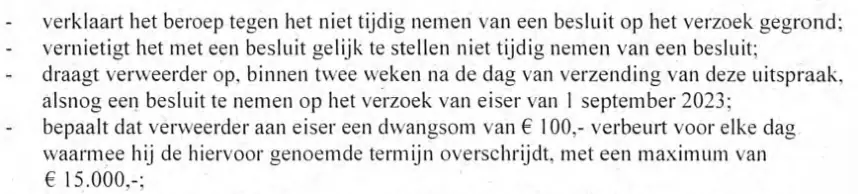

Beweisstück · Urteil
Bezirksgericht Den Haag, Urteil vom 27. Dezember 2023 (ECLI:NL:RBDHA:2023:20409)
Die Passage
„Das Bezirksgericht: erklärt die Klage gegen das nicht fristgerechte Ergehen einer Entscheidung über den Antrag für begründet; hebt das einer Entscheidung gleichzustellende nicht fristgerechte Ergehen einer Entscheidung auf; verpflichtet den Beklagten, innerhalb von zwei Wochen nach dem Tag der Versendung dieses Urteils doch noch eine Entscheidung über den Antrag des Klägers vom 1. September 2023 zu treffen; bestimmt, dass der Beklagte zugunsten des Klägers ein Zwangsgeld in Höhe von 100 € für jeden Tag verwirkt, um den er die vorgenannte Frist überschreitet, bis zu einem Höchstbetrag von 15.000 €;“ Der Tenor des Urteils („Beslissing“) auf Seite 3, die ersten vier Punkte; im Urteil stehen sie als Aufzählung. Aus dem Niederländischen übersetzt; der Originaltext steht unten.
Originaltext
“De rechtbank: verklaart het beroep tegen het niet tijdig nemen van een besluit op het verzoek gegrond; vernietigt het met een besluit gelijk te stellen niet tijdig nemen van een besluit; draagt verweerder op, binnen twee weken na de dag van verzending van deze uitspraak, alsnog een besluit te nemen op het verzoek van eiser van 1 september 2023; bepaalt dat verweerder aan eiser een dwangsom van € 100,- verbeurt voor elke dag waarmee hij de hiervoor genoemde termijn overschrijdt, met een maximum van € 15.000,-;”
„Eiser“ (Kläger) ist Giltay, „verweerder“ (Beklagter) der Nationale Ombudsmann. Die auf deeplink.

Warum dieses Dokument wichtig ist
Dies ist das zweite der beiden Urteile aus dem Jahr 2023, in denen das Gericht dem Nationalen Ombudsmann im Streit um einen Informationsantrag Unrecht gab. Nachdem bereits festgestellt worden war, dass die Institution einen früheren Antrag zu Unrecht blockiert hatte, befand das Gericht hier, dass der Ombudsmann auch über einen anderen Woo-Antrag (niederländisches Informationsfreiheitsgesetz) vom 1. September 2023 nicht fristgerecht entschieden hatte. Es verpflichtete ihn, dies innerhalb von zwei Wochen nachzuholen, und setzte für jeden Tag, um den er diese Frist überschritt, ein Zwangsgeld von 100 € fest, bis zu einem Höchstbetrag von 15.000 €. Mit den verhängten Zwangsgeldern finanzierte Giltay die englische Übersetzung seines Buches, die er anschließend weltweit kostenlos zur Verfügung stellte.
Herkunft
- Dokument
- Urteil in Einzelrichterbesetzung
- Gericht
- Bezirksgericht Den Haag, Sitzungsort Den Haag
- Aktenzeichen
- SGR 23/6997
- ECLI
- ECLI:NL:RBDHA:2023:20409
- Datum
- 27. Dezember 2023, in öffentlicher Sitzung verkündet; Abschrift am 4. Januar 2024 übersandt
- Parteien
- E.F. Giltay aus Den Haag, Kläger, gegen den Nationalen Ombudsmann, Beklagter
- Bevollmächtigter
- G. Heres Hoogerkamp L.L.M., für den Kläger
- Richterin
- C.I.H. Kerstens-Fockens
- Betreff
- Klage gegen das nicht fristgerechte Ergehen einer Entscheidung über einen Antrag vom 1. September 2023 nach der Wet open overheid (Woo, niederländisches Informationsfreiheitsgesetz) auf Herausgabe aller Dokumente zum Bericht 1999/507 des Nationalen Ombudsmanns
- Verfahren
- Erste Instanz, in Einzelrichterbesetzung; ohne mündliche Verhandlung entschieden in Anwendung von Artikel 8:54 des Allgemeinen Verwaltungsrechtsgesetzes (Algemene wet bestuursrecht)
- Bezüge
- Antrag vom 1. September 2023; Inverzugsetzung vom 3. Oktober 2023; Klageschrift vom 19. Oktober 2023; Schreiben des Beklagten vom 13. November 2023; das Urteil vom 18. Juli 2023 über einen früheren Woo-Antrag; die Nachzahlung des Zwangsgelds am 26. Juni 2026
- Sprache
- Niederländisch
- Fundstelle
- Rechtspraak.nl, in anonymisierter Form
- Seiten
- 3
- Webadresse
- deeplink.
rechtspraak. nl/ uitspraak? id= ECLI: NL: RBDHA: 2023: 20409 - Siehe auch
- ING-Kontoauszug, Zwangsgeldzahlung des Nationalen Ombudsmanns, 16. Februar 2024
Zitiert in:
- dem Essay „Das Verbot fiel, das Buch hielt stand“ in den Kapiteln (3) „Was das Buch enthüllt: die Srebrenica-Vertuschung“ und (9) „Für immer festgehalten“
- dem Stimmenabschnitt
- der Biografie des Autors.
Dokument: https://
Zuletzt geändert am 13. September 2026, abgerufen am 9. Oktober 2026.

Diese Seite ist ein Beweisstück zum Buch Der Cover-up-General von Edwin Giltay und zur dazugehörigen Website.